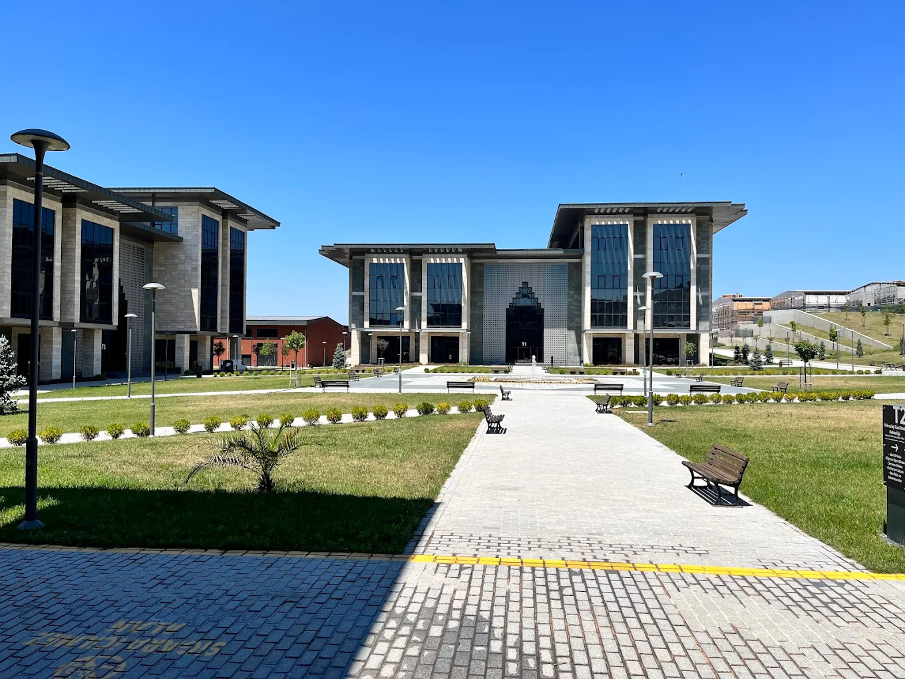

Uygulamalı Eğitim
Teorik dersler, gelişmiş laboratuvar ortamlarında pratik uygulamalarla desteklenir.
Marmara Üniversitesi bünyesinde uygulama ağırlıklı mühendislik eğitimi veren Teknoloji Fakültesi, öğrencilerini sanayi ile iç içe projelerle geleceğe hazırlıyor. Recep Tayyip Erdoğan Külliyesi'ndeki modern sınıflarımızda teknik vizyonunuzu geliştirin.
Portfolyoma Dön
Teorik dersler, gelişmiş laboratuvar ortamlarında pratik uygulamalarla desteklenir.
Öğrencilerimiz eğitimlerinin son dönemini tam zamanlı olarak sanayi kuruluşlarında geçirir.
Bilgisayardan Tekstile, Mekatronikten Metalurjiye kadar geniş bir mühendislik yelpazesi sunulur.
Maltepe'deki yeni külliyede dijital kütüphane ve sosyal alanlarla kampüs hayatı sunulur.
Başarılı öğrencilerimiz, fakültemizdeki farklı mühendislik dallarında ikinci diploma alabilir.
TÜBİTAK ve TEKNOFEST odaklı öğrenci takımları ile proje geliştirme imkanı sağlanır.
Marmara Üniversitesi
Uygulama becerisi yüksek, yenilikçi ve etik değerlere sahip mühendisler yetiştirmek.
Maltepe / İstanbul